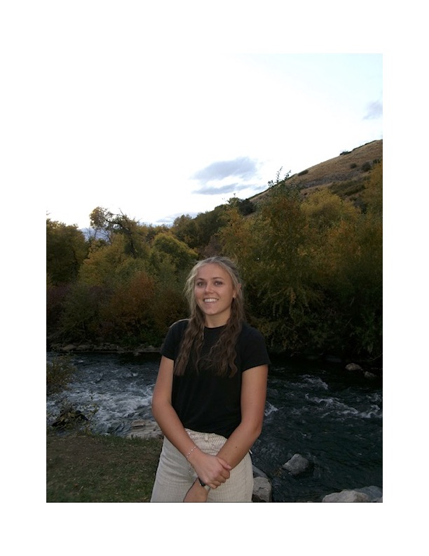

Resume

Currently a College Student.
Education
- Kimberly High School
- 2018–2022
- High School Degree
- GPA 3.89
- College of Southern Idaho
- 2019–2022
- Associates in Health Science
- Completed during High School through dual credit programs
- Brigham Young University
- Currently Studying
- Pre-Business with the intention of applying to the entrepreneurial management program this summer.
Work Experience
- Sales Rep — September 2025–Current
- In-Field Mentor at The MTC — July 2025–Current
- Research Assistant — 2022-2023
Skills
- Communication
- Observant
- Persistent
Linkdin